Unified Automatic Control of Vehicular Systems With Reinforcement Learning
Zhongxia Yan, Abdul Rahman Kreidieh, Eugene Vinitsky, Alexandre Bayen, Cathy Wu
MIT, UC Berkeley
IEEE T-ASE, IROS 2022
IEEE | arXiv | Code (Github)
a) All vehicles have assigned routes towards destinations. A fraction of vehicles are centrally coordinated (red, "AV") towards a system objective while the rest (black) are uncontrolled. b) Each AV senses neighboring vehicles. c) A learned policy dictates accelerations and lane changes of each AV. Uncontrolled vehicles follow default driving behavior. d) States of all vehicles are updated accordingly.
Emerging vehicular systems with increasing proportions of automated components present opportunities for optimal control to mitigate congestion and increase efficiency. There has been a recent interest in applying deep reinforcement learning (DRL) to these nonlinear dynamical systems for the automatic design of effective control strategies. Despite conceptual advantages of DRL being model-free, studies typically nonetheless rely on training setups that are painstakingly specialized to specific vehicular systems. This is a key challenge to efficient analysis of diverse vehicular and mobility systems. To this end, this article contributes a streamlined methodology for vehicular microsimulation and discovers high performance control strategies with minimal manual design. A variable-agent, multi-task approach is presented for optimization of vehicular Partially Observed Markov Decision Processes. The methodology is experimentally validated on mixed autonomy traffic systems, where fractions of vehicles are automated; empirical improvement, typically 15-60% over a human driving baseline, is observed in all configurations of six diverse open or closed traffic systems. The study reveals numerous emergent behaviors resembling wave mitigation, traffic signaling, and ramp metering. Finally, the emergent behaviors are analyzed to produce interpretable control strategies, which are validated against the learned control strategies.
@article{yan2022unified,
title={Unified Automatic Control of Vehicular Systems With Reinforcement Learning},
author={Yan, Zhongxia and Kreidieh, Abdul Rahman and Vinitsky, Eugene and Bayen, Alexandre M and Wu, Cathy},
journal={IEEE Transactions on Automation Science and Engineering},
year={2022},
publisher={IEEE}
}
Experimental Results
For each vehicular scenario, we provide one or more time-space diagrams and videos detailing the behavior of AVs under a particular vehicular density, as well as generalization performance of the policy under a range of vehicle densities.
For all videos and time-space diagrams, the RL-learned control policy is initially off, then turns on (time 0 in the time-space diagrams). Note the systemic behavioral changes.
Time-space diagrams are useful for capturing the behavior of vehicles across time. In these diagrams, each curve denotes a separate vehicle, bolded curves denote centrally coordinated AVs, and steeper curve indicate higher vehicle speed (more desirable). One can see that control by a DRL-trained policy significantly improves the average vehicle speed in the system.
| Time-space Diagram | Video | Generalization |
|---|---|---|
| Single Ring System. Note the automatically learned stabilization behavior. | ||
 |
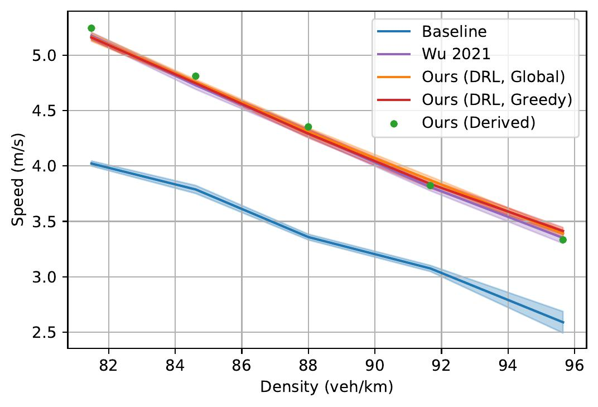 | |
| Double Ring System. Note the learned stabilization behavior (both lanes for Global objective, AV's own lane for Greedy objective). | ||
|
Global Objective
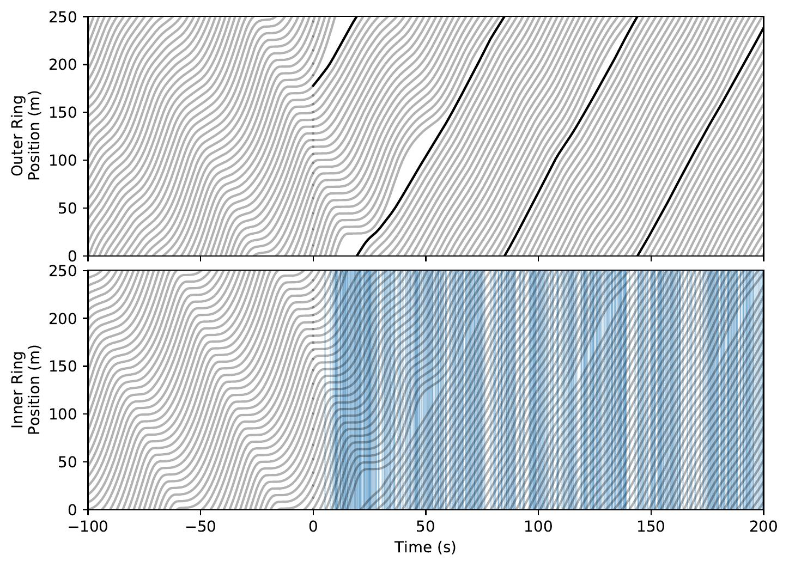 Greedy Objective 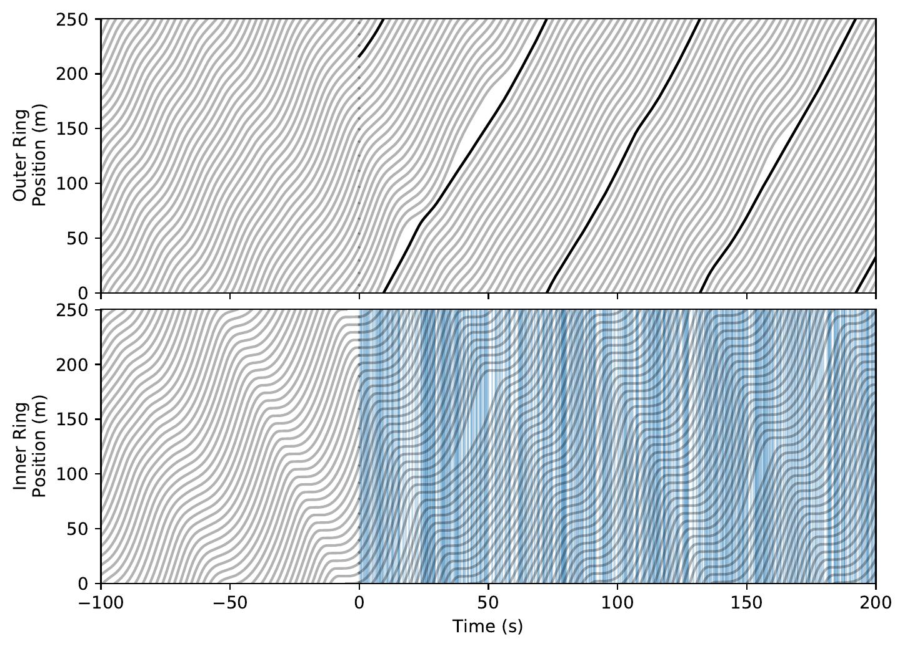 |
|
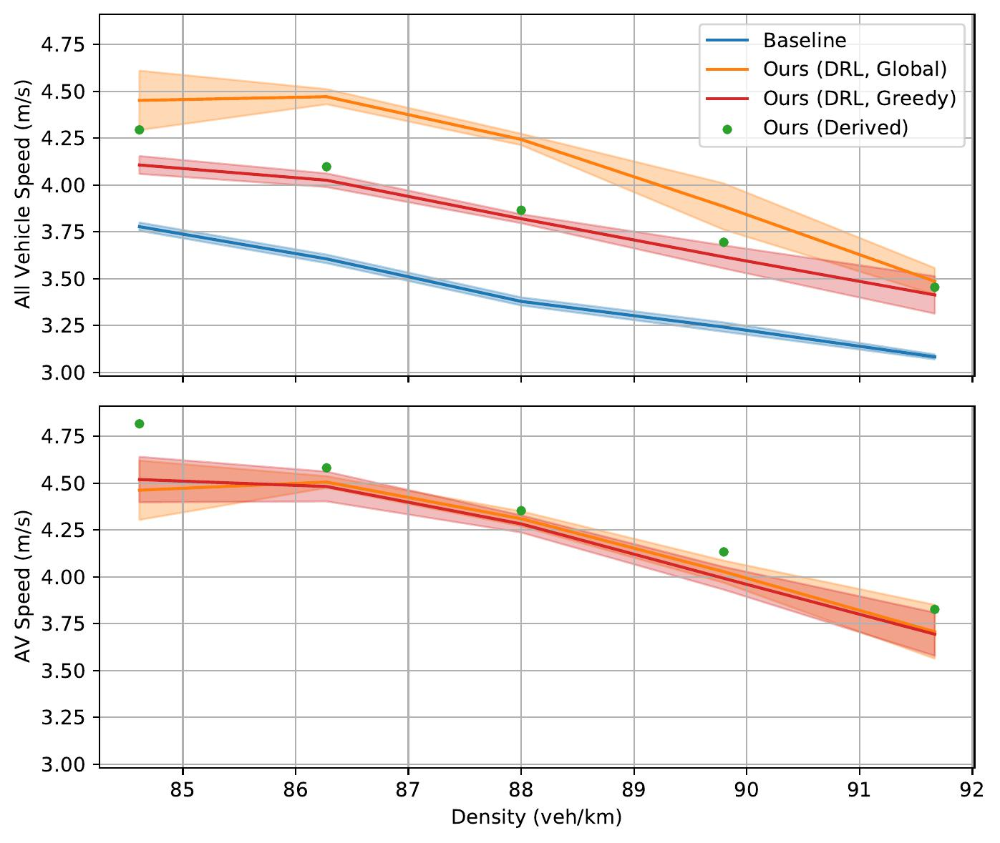 |
| Figure Eight System. Note the learned snaking behavior without braking. | ||
| 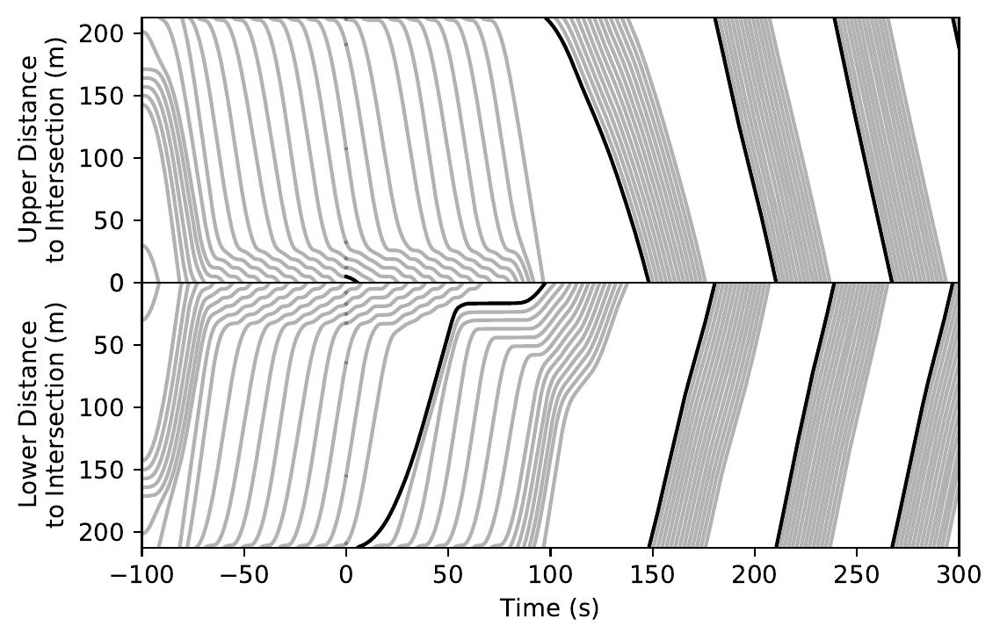 | 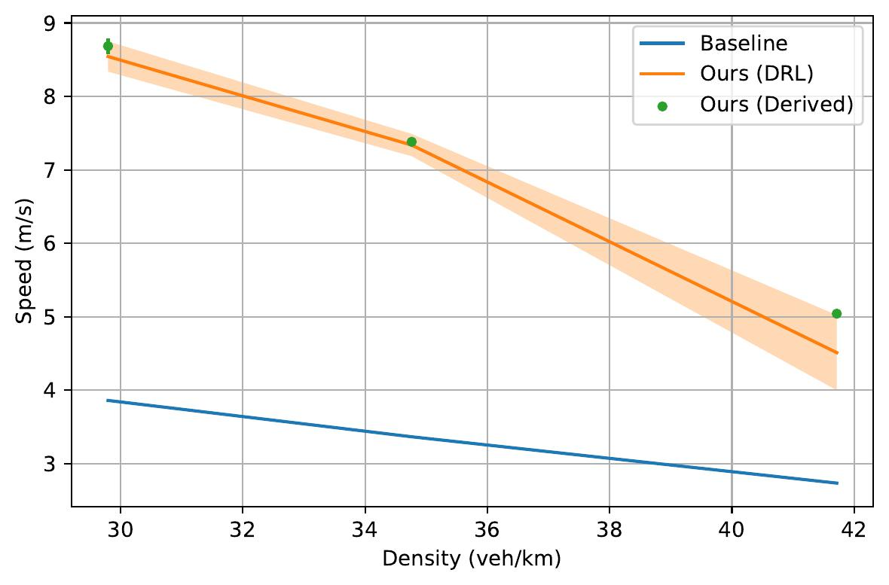 | |
| Highway Bottleneck System. Note the automatically learned alternating behavior at merges. | ||
| 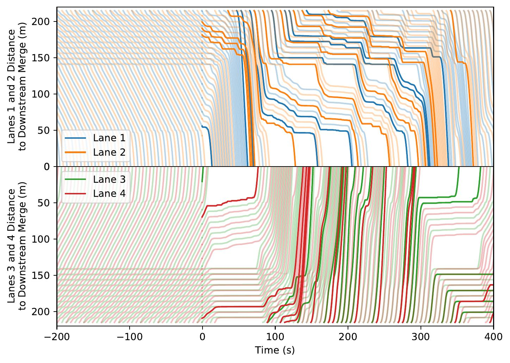 | 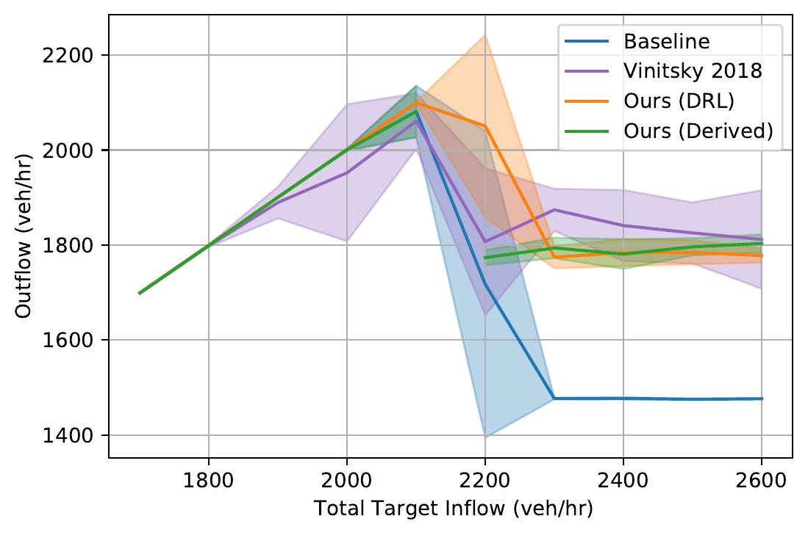 | |
| Highway Ramp System. Note the highway vehicle's automatic upstream rate-limiting behavior. | ||
| 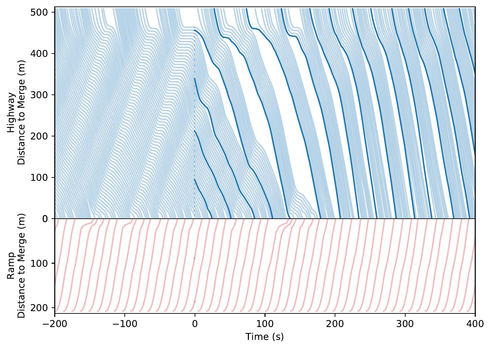 | 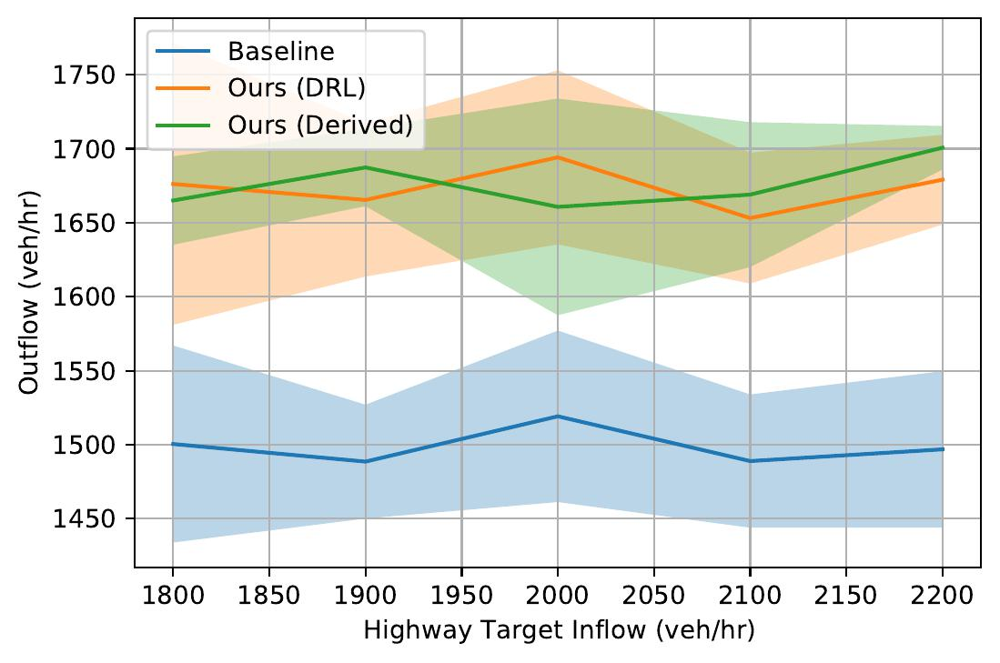 | |
| Intersection System. Note the automatically learned platooning and alternating behaviors. | ||
| 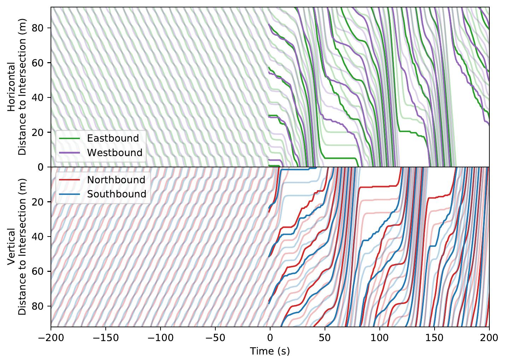 | 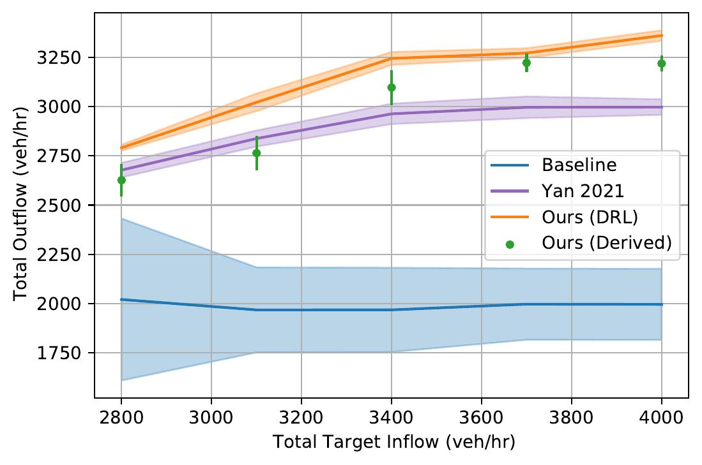 | |
Acknowledgement
The authors acknowledge MIT SuperCloud and Lincoln Laboratory Supercomputing Center for providing computational resources supporting the research results in this paper. This research was partially supported by Amazon, MIT-IBM Watson AI Lab, and the Department of Transportation Dwight David Eisenhower Transportation Fellowship Program. The authors are grateful for the constructive suggestions by all reviewers and editors.